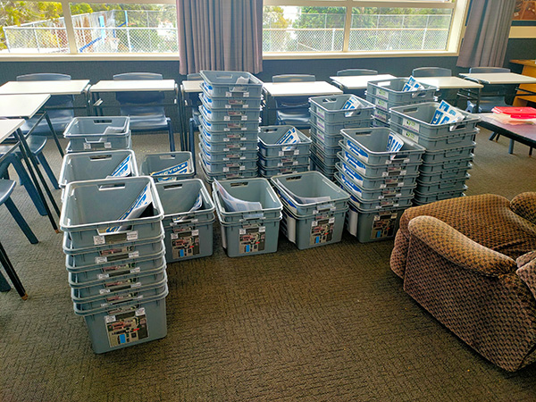
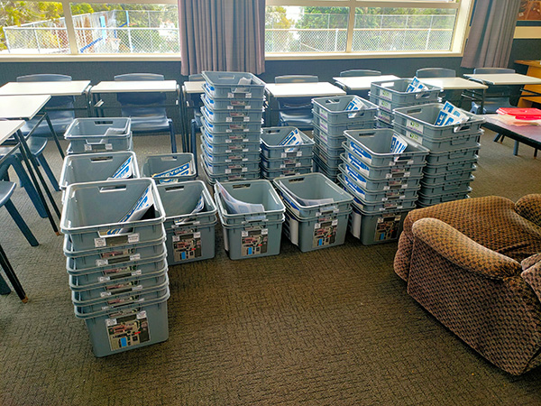

The Nelson College Environmental Committee currently has two active initiatives
that continue to be maintained and improved. We are always looking to improve
existing initiatives or create new ones. If you or someone you know have ideas,
do not hesitate to reach out, and we will try to make changes or implement new
initiatives if we agree they are necessary.
Find
out more about how to contact us here.
Tree Planting
The tree planting initiative was started in 2015, with an aim to increase the
biodiversity of Nelson College and the surrounding Grampians. It involves the
planting of native flora on the bank of the top field, and the bank located
near the old nursery of the Committee. This initiative has seen much success in
recent years, with many new members joining to help contribute to our biodiversity
efforts. In 2023, our members collaborated with the Nelson College for Girls Environmental
Committee, which resulted in a significant increase in planted trees. The top
field bank now has an estimated 200-300 trees planted, while the old nursery
bank has 25-75.
This initiative is necessary to reduce the footprint of Nelson College and its
students. It allows for collaboration between Nelson College and other schools,
and gets the students involved in a meaningful initiative that will bring
positive change for the future. Unfortunately, with the sale of the Nelson
College Outdoor Education block, the Nelson College Environmental Committee
has lost its plant nursery. Although this is a significant setback to the
initiative's progress, we will continue to maintain the already planted trees while
researching the possibility of a new nursery location. In 2024, there will
be a large reduction in tree planting, but if funding is acquired, we should
be able to plant some more trees before the end of the year.
Recycling
The recycling initiative was created at the end of 2023. Its aim is to improve
the awareness of Nelson College students regarding what can and cannot be
recycled. This initiative is also needed to create the infrastructure necessary
for a long-lasting recycling program.
The bins were provided by Paper4Trees, an organisation that gives trees to
participating schools when they recycle. Combining these bins with posters
created by the Committee means that recycling is now more easily understood
by Nelson College students and will allow for more steadfast infrastructure to
be present at the school. This initiative will allow the Committee to gain more
trees to plant, which will contribute to the tree planting initiative. It will
also increase the amount of recycling we do, which will subsequently reduce
the amount of waste we contribute to landfill.
Upcoming Initiatives
The Nelson College Environmental Committee is working on two new initiatives, which
will be rolled out in 2024.
-
The first is a pest control initiative. A pest control initiative has been
previously run by the Committee but has been inactive over the past 2 years.
This initiative is being reintroduced to reduce the number of small pests, such
as rats and mice, and to investigate the small animals surrounding the college.
The initiative will utilise our existing Victor rat traps and ink tunnels.
These traps are successfully used by the
Brook Waimārama Sanctuary
and Birdlife on Grampians
organisations.
-
The second is a composting initiative. This initiative is being introduced
to allow the school to reduce the amount of organic waste being sent to landfill,
and instead divert it to be used in a sustainable practice. The compost
produced from this initiative will then be used with our tree planting
initiative to allow the trees to gain fresh soil, which will promote the growth
and survival of the trees. This initiative will start in collaboration with
the Nelson College food technology classes. Once the initiative has gained
traction and has been refined for maximum efficiency, the Committee will
investigate the possibility of compost collection throughout the school.

 
